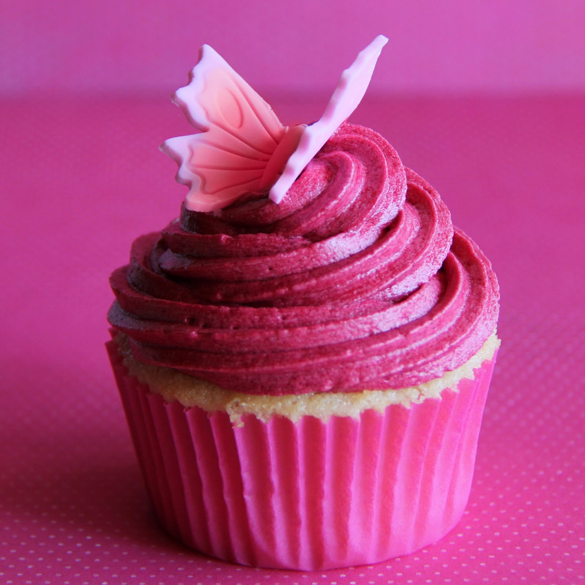
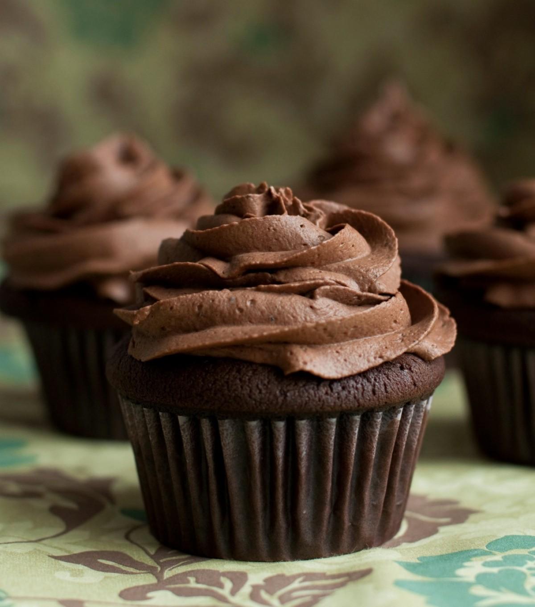
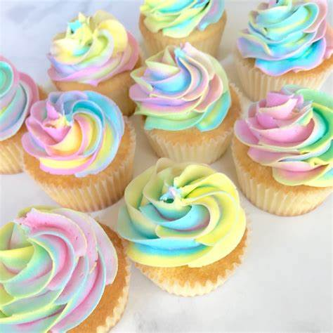

cupcake.com
We are a customized
cupcake creating business

These vanilla cupcakes are, by far, one of the most-loved recipes on this website. Using creamed butter, plus cake flour, sour cream, and egg whites (no yolks!), guarantees a soft, fluffy, and cake-like crumb. Pure vanilla extract plus the optional addition of vanilla beans seals in a classic vanilla flavor. Use a piping tip or knife to garnish each with vanilla buttercream.

Hot pink cupcakes are a popular choice for various occasions, such as birthdays, baby showers, or any event that calls for a burst of color and a touch of whimsy. The color evokes feelings of joy and celebration, making it a fantastic choice for parties and gatherings.

Chocolate cupcakes are highly customizable. You can add fillings like chocolate ganache or caramel, incorporate various flavors (mint, raspberry, peanut butter), or even stuff them with surprises like chocolate truffles.
Whether you prefer them topped with a swirl of creamy frosting or enjoyed plain, chocolate cupcakes are a universal favorite, satisfying the sweet cravings of chocolate lovers everywhere.

Rainbow cupcakes are a delightful treat that can bring joy to any occasion. They're not only a hit with kids but also with adults who appreciate the vibrant and whimsical appearance of these colorful creations.

Ice Cream flavor cupcakes offer the joy of indulging in your favorite frozen treats without the need for an ice cream cone or bowl. They are a wonderful way to bring the essence of summer and the nostalgia of the ice cream parlor to any celebration or gathering.